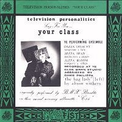

1991 - Clawfist - CLAWFIST8 - 7" Split
Songs:
[TVPs]Your Class
Television Personalities Sing For You "Your Class"
Ye Performing Ensemble:
Dazza Treacey (soprano + lute)
Jozza Head (mellotron + pipes)
Jezza Bloom (timpani + vibes)
Recorded at Ye Olde Barn studio assisted by dame Philippa
"The bag lady" (cover) by Alison Withers
Originally performed by BMX Bandits
on their award winning albumette "C86"
[BMX Bandits] Someone To Share My Life With
Duglas Stewart: vocals
Gordon Keen: guitar
Francis Macdonald: drums
Norman Blake: bass
Gerry Love: guitar and vocals
Brendan O'Hare: handclaps
Recorded by Paul Chiselm
Note: The Clawfist Singles Club is a series
in which
"each band concerned covering the other's song"
|